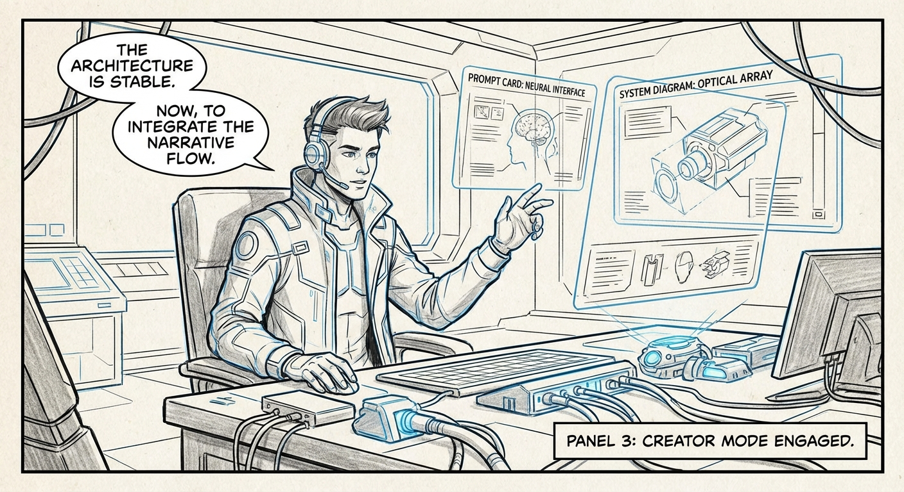
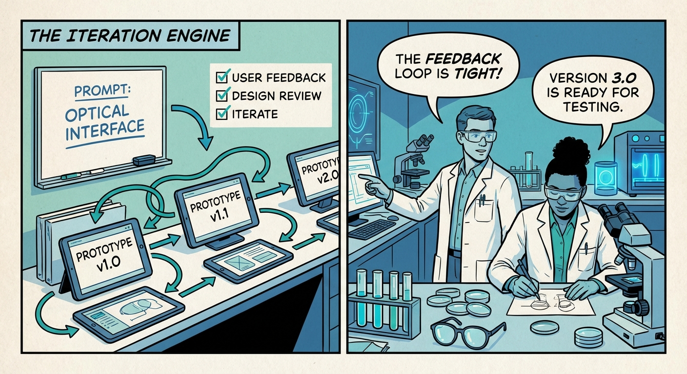
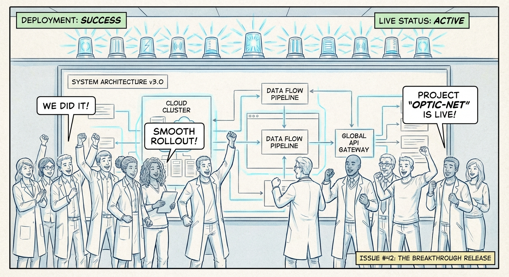

The Vibe Coding Manifesto
Pixel Detective was not hand-written in the traditional sense. It was imagined, prompted, tested, and refined into a production-ready system. This is the disciplined story of turning intent into architecture.

Panel 01 - Spark
The project begins as a set of prompts and a thesis: build a media search engine that feels like exploration, not filing. The first artifacts are ideas made visible.

Panel 02 - Promptcraft
Each sprint turns prompts into tangible interfaces, then pressure-tests them against real constraints: performance, readability, and usability.

Panel 03 - System
The outcome is not a demo, but a platform. Microservices, GPU acceleration, and curated latent space workflows evolve from that initial spark.
Evidence trail
This narrative is grounded in sprint plans, architecture specs, and milestone documentation.
Architecture
See the formal specs in `docs/architecture.md` and `frontend/ARCHITECTURE.md`.
Sprint 11
Latent space visualization and curation suite delivered in sprint 11 docs.
Roadmap
Roadmap and project status trace each phase with measurable targets.